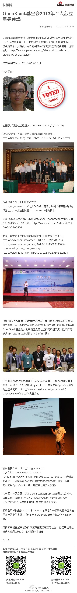

2012年OpenStack亚太技术大会上北京开场的Boris就来自Mirantis, 另一个联合创始人Alex也在现场。这两人都来自前苏联，但在美国找到了事业。@Adela可爱多@COSUG:#OpenStack#第二家获得投资的海外企业，Mirantis获英特尔戴尔华山资本1000万美元注资-新闻频道-CNW.com.cn! 网页链接
CSDN问答这个产品怎样？网页链接 //@Fenng: 如果 robbin 在美国创业，估计现在也没 Stack Overflow 们的事儿了. 这就是中国创业者得命，咱得认。@范凯robbin:最惨的时候服务器很紧张，机房搬机器还把我服务器摔了，我整夜满头大汗在机房拆开服务器维修，边修边打电话给好友请教，愁死我了。后发现是硬盘问题，天一亮我冲到徐家汇买硬盘到机房装上。后来有钱了，立马买了16G内存2颗4核至强服务器，CPU从90%降到30%。后来我特害怕去机房，有心理阴影。
支持国内社区人士积极参与国际活动。@ben_杜玉杰:OpenStack基金会2013年个人独立董事竞选：OpenStack基金会将从基金会提名的22位成员中选出2013年度的8个个人独立董事，在下面的网页上搜索你想提名的任何成员。在该会员的个人资料页，可以看到... 网页链接 （使用新浪长微博工具发布 网页链接） 
 网页链接
网页链接